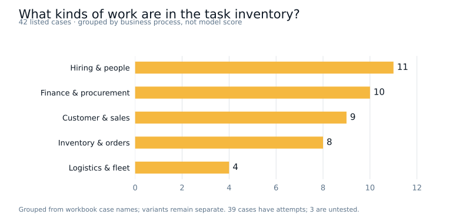
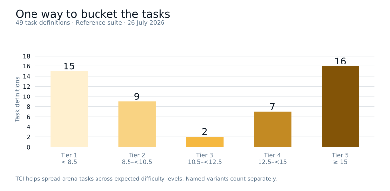
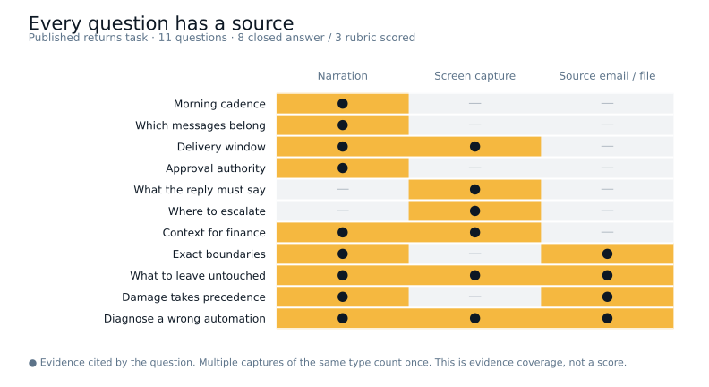
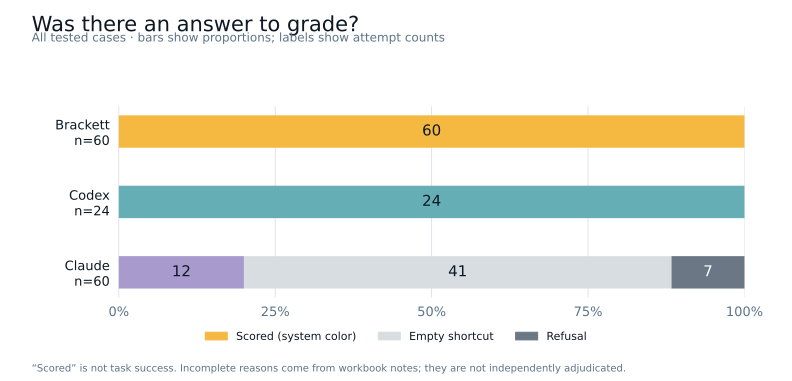
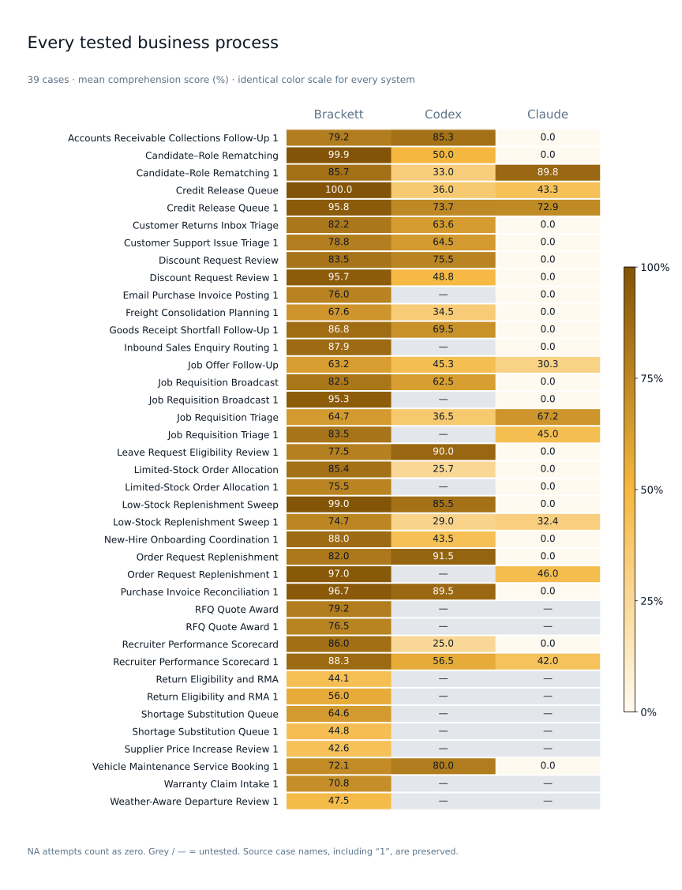
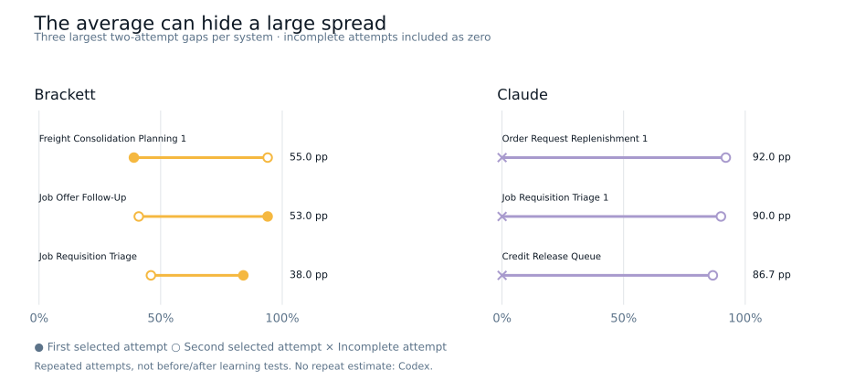
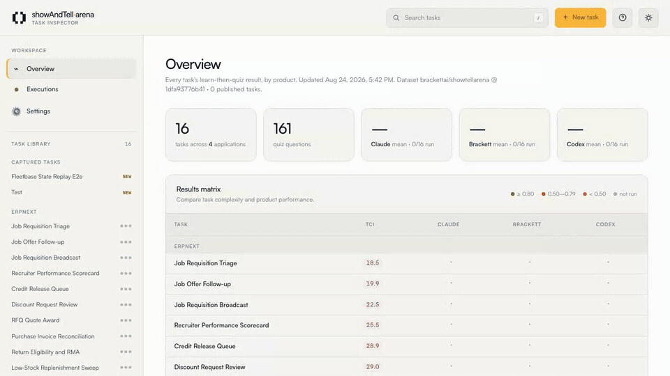
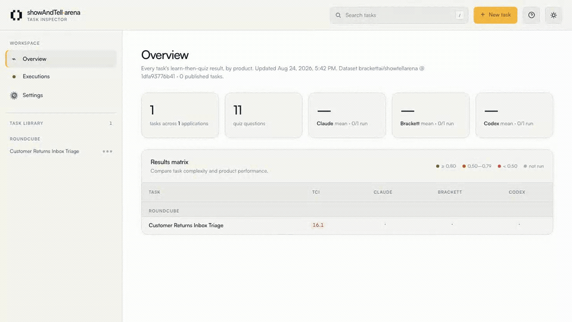

Agent Effectiveness
Index.
How well does an agent understand the business,
do the work, and learn?
We have seen the bills for an agent. How do we know how much it helps? AEI defines a standard way to measure an agentic system against the work a business needs it to do.
01 / THE INDEX
Understand. Do. Learn.
Three questions we would ask about anyone doing work for the business.
Business understanding
Know the business, its facts, and its rules.
Operational execution
Do the work correctly, within its authority.
Learning persistence
Retain, transfer, and adapt what it learns.
What makes two AEI scores comparable?
The same work and conditions
Declare the task suite, system version, tools, permissions, teaching profile, and budgets. Access to documents and a business graph is part of the comparison, not something left implicit.
Access profiles: K0 starting system; K1 documents; K2 graph with a base navigator; K3 the same graph with a trained navigator.
Evidence of what happened
Use answers and citations for understanding, environment state and action records for execution, and matched tests over time for learning. A transcript helps explain the work; it does not replace checking the outcome.
A score with its context
Report B, O, L, the safety gate, the evaluation scope, and 95% confidence intervals. The reference method uses 10,000 stratified paired block-bootstrap resamples, conditional on the declared benchmark population. A critical prohibited action sets episode execution to zero and fails the reference safety gate. If a required learning panel is missing, L and the full AEI are unavailable.
HOW SHOW & TELL CONNECTS TO AEI
What stays after the lesson?
This repository tests Teach → Comprehend: what an agent picks up from one demonstration.
TeachOne narrated workflow
ComprehendRules, exceptions, authority
The full AEI learning panel
A demonstration is one declared teaching profile. Written procedures, feedback, practice, and training are also supported by AEI.
TASKS / SHOW & TELL
Show the work. Test the understanding.
Business processes with rules, boundaries, exceptions, and consequences.

Another way to group tasks: TCI
TCI is a useful heuristic for choosing tasks for the arena. It helps us spread the benchmark across expected difficulty levels and look for tasks we expect to be harder. It groups tasks by their rules, evidence, steps, and demonstration. This view uses 49 historical task definitions from 26 July 2026, separate from the workbook cases above.

EXAMPLE / INSIDE A TASK
The rule. The boundary.
The exception.
Customer Returns Inbox Triage · One inbox, several rules, and an exception that overrides them.
Same inbox. Different decisions.
Frames from the human demonstration · Open an image to read it at full size

(a) Approve directly
£18.40 · within the return window
Refund to the original card; three to five working days; no return needed.


Recording, narration, screenshots, and questions ↗
ONE NARRATED WORKFLOW
More than knowing
where to click.
Review the morning returns inbox. Work out what qualifies, what needs approval, and what should be left alone.
- Normal return window
- ≤ 30 days from delivery
- Direct approval limit
- ≤ £50
- Arrived damaged
- Overrides both normal gates
These are the rules of this benchmark scenario. The question set contains 11 questions; three are explored below.
Try three questions: a boundary, an exception, and a wrong automation
QUESTION FROM THE DATASET · CLOSED ANSWER
On 9 April, Sam requested £41 for an item delivered on 10 March, while Nadia requested £50 for an item delivered on 4 April. How should the handler process both requests?
WHAT THIS TESTS
The exact boundary matters. “Within 30 days” and “£50 or less” are inclusive.
See the expected answer
Approve both requests and reply directly to Sam and Nadia.
QUESTION FROM THE DATASET · RUBRIC SCORED
Elena's £74 jug was delivered on 5 February and arrived cracked. On 9 April, what should the handler do?
WHAT THIS TESTS
A rule cannot be applied in isolation. Damage changes the decision even when both normal limits are exceeded.
See the expected answer
The rubric requires all three: recognize damage, explain that it overrides both gates, and choose direct approval.
QUESTION FROM THE DATASET · RUBRIC SCORED
A proposed automation replies to every inbox message, measures eligibility from the email date, forwards requests without adding context, sends exactly £50 requests to finance, and rejects a £74 cracked jug delivered on 5 February as too old. Does it reproduce the demonstrated workflow? Explain any changes required.
WHAT THIS TESTS
Can the agent recognize a process that sounds plausible but applies the business rules incorrectly?
See the five required corrections
- Filter for customer returns; leave automated notices untouched.
- Measure from delivery, not the email date.
- Forward to
finance@showAndTell.testwith amount, delivery age, and reason above the thread. - Approve exactly £50 directly when otherwise eligible.
- Apply the damage exception to Elena's request and approve directly.
What do the 11 questions test, and where are the answers grounded?

Published returns task · revision f4aa425. This revised quiz illustrates task design; it is not asserted to match every earlier result.
RESULTS / COMPREHENSION AFTER TEACH
Show & Tell
Preliminary resultsOne demonstration. Questions about the rules, exceptions, and decisions it contained.
Show & Tell quiz results. They do not represent a full AEI score.
Mean comprehension score
24 cases attempted by all three systems · equal weight per case

Case-by-system heatmap · all 30 tested cases

How much do repeated attempts differ?

Results, coverage, and scoring
What is included
The snapshot includes 30 cases with at least one attempted system and 12 cases not yet tested by any system. Brackett: 60 selected attempts across 30 tested cases. Claude: 60 selected attempts across 30 tested cases. Codex: 24 selected attempts across 24 tested cases. Codex Record & Replay is tested on macOS because Teach relies on OS internals.
How the average is calculated
Average the attempt scores within each case, then weight cases equally. An NA is an incomplete attempt worth zero. A blank is untested and excluded. The shared view uses cases attempted by every system, including incomplete attempts.
What this snapshot establishes
This is a work in progress with selected attempts and manual, non-canonical grading. Model and adapter versions are not fully pinned in the workbook. No confidence interval is reported for this snapshot; it is not a verified canonical leaderboard.
Source: Brackett ShowTell Benchmark Results.xlsx, Overview sheet. The machine-readable snapshot includes source hash, individual attempt scores, and aggregation rules. The repository defines the canonical quiz scoring protocol separately.
Explore results by business process
Load the interactive results to explore individual cases.
| Business process | Brackett | Codex | Claude |
|---|
“1” is retained where it appears in the source case name. A dash means untested; a zero can include incomplete attempts. Use the CSV for attempt-level status.
OPEN RESEARCH
Read it. Run it. Build on it.
Specification, code, task data, and reproducible figures.
AEI methodology & build specification
v0.2 · Scoring, teaching profiles, learning panels, safety gates, and uncertainty
Show & Tell Arena
Benchmark runner, agent adapters, quiz protocol, and task creation
Show & Tell on Hugging Face
Public returns-workflow sample · Recording, narration, captures, and quiz
Preliminary benchmark snapshot
144 selected attempts across 30 tested cases · CSV download
See how to run or create a benchmark task

